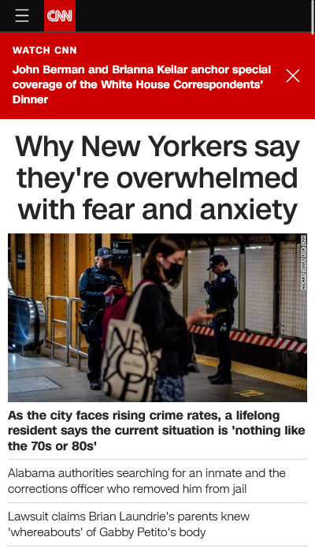
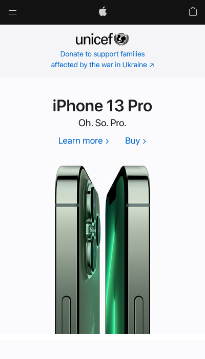

Visual Hierarchy
CNN
www.cnn.com Regardless of what you think about the content of their news stories, CNN's mobile site does a great job at managing visual hierarchy to deliver the information they want to. The use of fonts, colors, and images lead the eyes to the headline first, followed by the banner above, then down to the image, followed by the caption and then other possible news stories you may be interested in.
White Space and Clean Design
Apple
www.apple.com Apple as a company has built their modern image on sleek design and a clean look. Its no surprise their company site does a great job at displaying this principle. There is no clutter, nothing getting in the way, and everything feels well-spaced, you don't have to look through anything that you aren't there to find.
Contrast
Shopify
www.shopify.comWhile it could also be used as a good example for some other principles, Shopify is clever in how it uses contrast. Because their products are other web pages, which are often white or otherwise lightly colored, the Shopify site has a dark green background with white text on it in the places where it presents these images, allowing for both the images and the text to contrast well from the background.